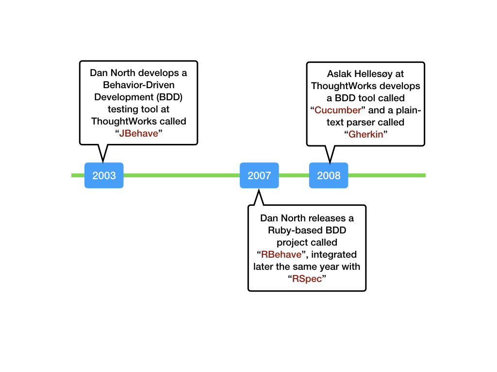
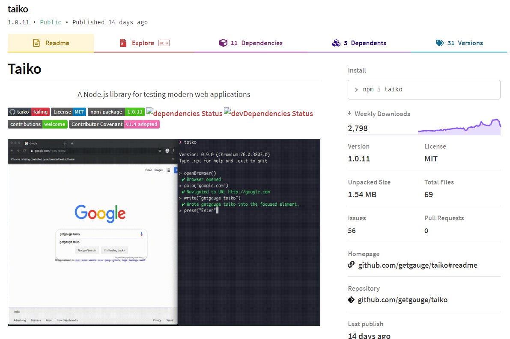

Reliable Browser Automation
Created by Thoughtworks and contributors
Presentation by Amit Sarkar
Thank you QA Babble
Thank you Zabil
Presentation made in
Taiko is a browser automation tool that makes it easy to drive your web browser with a friendly
Domain-Specific Language (DSL).
AGENDA
- About me
- E2E browser Tests
- Taiko
- Test framework with Taiko
- Tool comparison
- Limitations
- Demo
- Reference
- Contact
About me
Worked over 13+ years in the software testing world.
Tested mobile sites, web applications and desktop applications.
Worked in large enterprises and in start-ups.
Worked for

Online presence
LinkedIn - @amitsarkar007
GitHub - @amitsarkar007
E2E Browser Tests

E2E Browser Tests
Challenges
- Takes long time to execute
- Not part of development lifecycle
- Flaky
- Long feedback cycles
- Tough to read or modify
E2E Browser Tests
Importance
Tests whether the flow of application is performing as designed, from start to finish
E2E Browser Tests
Goal
Simulate what a real user scenario looks like from start to finish
INTRODUCTION
Taiko is a free and open source browser automation tool built by Thoughtworks.
Open source history
SOURCE - Thirstyhead.com by Scott Davis
Open source history

SOURCE - Thirstyhead.com by Scott Davis
Meaning / Origin

Inspiration #1

Inspiration #2


Featured In

A Node.js library
It is a node library with a clear and concise API to automate the chrome browser.
Uses DevTools API
It uses the Chrome DevTools Protocol API and is built ground up to test modern web applications.
Custom Plugins

Taiko’s plugin architecture allows you to extend it in ways that suit your requirements.
Smart selectors

Write test scripts by looking at a web page without inspecting it’s source code.
Implicit waits

Scripts written in Taiko are free of explicit local or global waits and the flakiness.
Interactive recorder

Record and write maintainable test scripts within seconds using Taiko's unique recorder which is a REPL to automate the browser.
Request & response stubbing

Mock and stub XHR request from the browser with Taiko's intercept API.
Acronyms
- XHR stands for XML HTTP Request. It's used to update parts of a web page, without reloading the whole page.
- REPL stands for Read Eval Print Loop. It is an interactive programming environment that takes single user inputs, executes them, and returns the result to the user
Test Framework
What would a test framework with Taiko look like?
Programming Language

Test Runner

Library


Protocol
Browser


Front-end JS Framework


Tool Comparison
How does Taiko compare with other browser automation tools?

Limitations
Are there any limitations to Taiko?
Languages not Supported


Browsers not Supported


Demo
It's demo time :)
Reference
- Taiko (Main) - https://taiko.dev/
- Taiko (Github) - https://github.com/getgauge/taiko
- Taiko (Spectrum) - https://spectrum.chat/taiko
- Taiko (Documentation) - https://docs.taiko.dev/
Use Github to post issues with Taiko and Spectrum to ask questions about Taiko to the team
Thank You
Email - amit.sarkar007@gmail.com
Mobile - +44 74932 51059